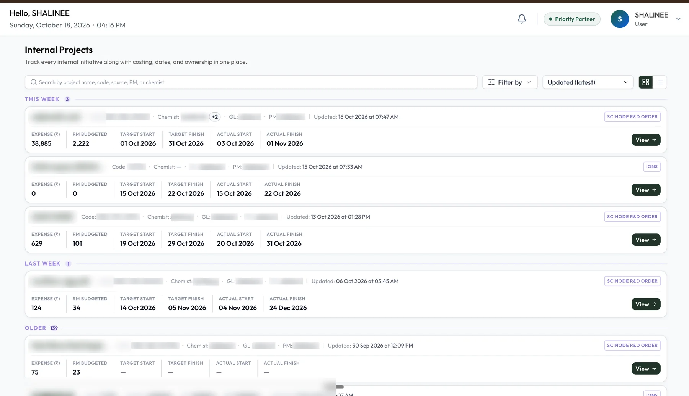
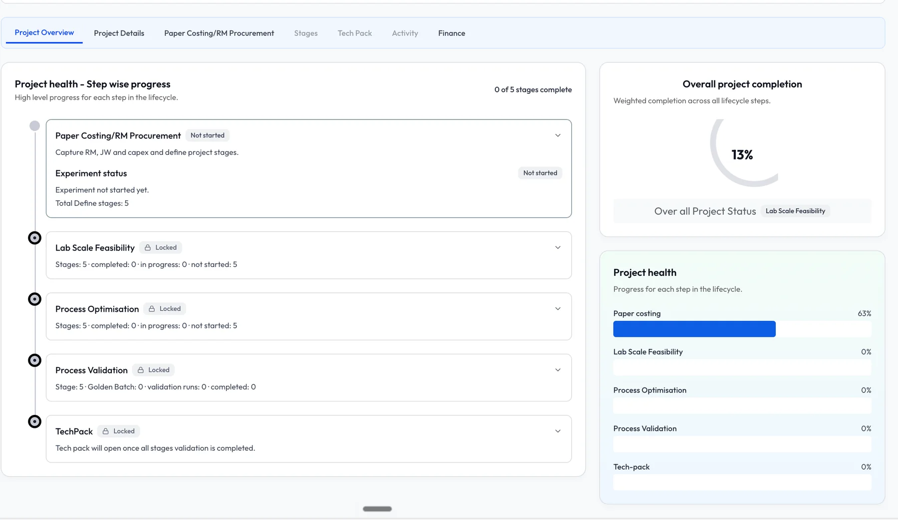
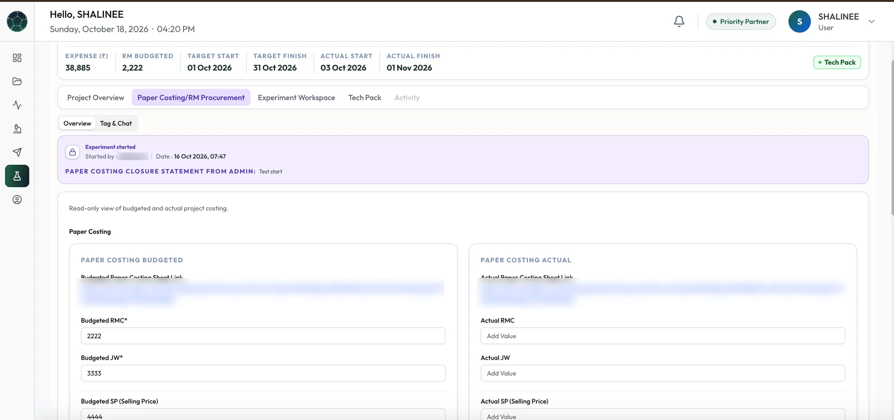
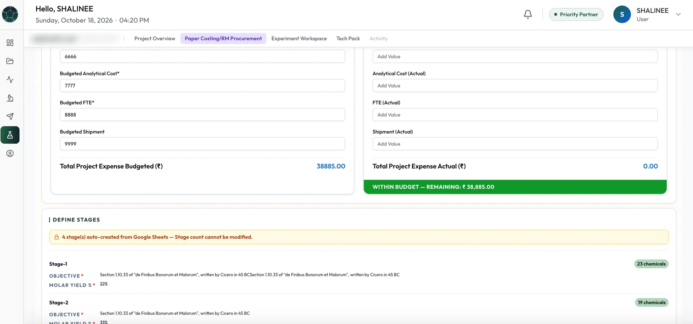
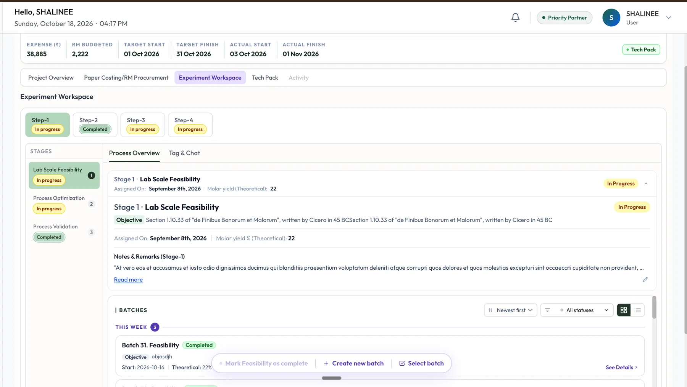
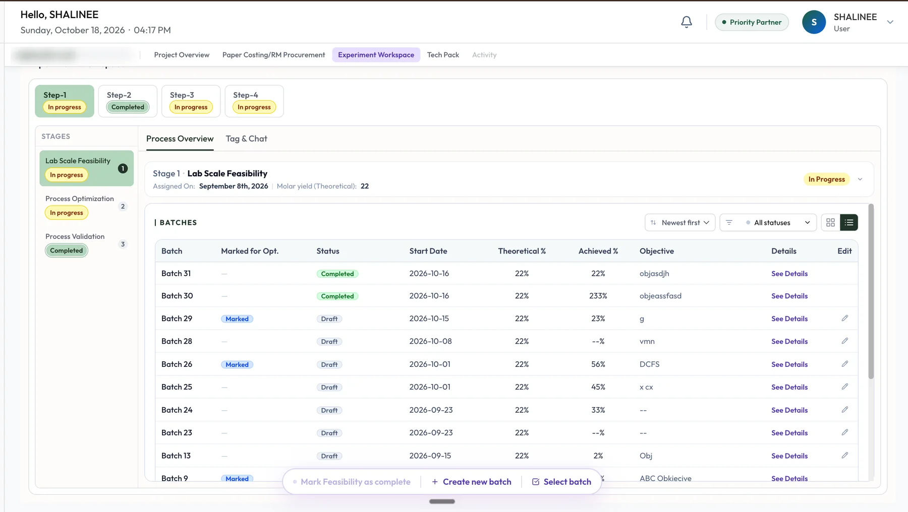
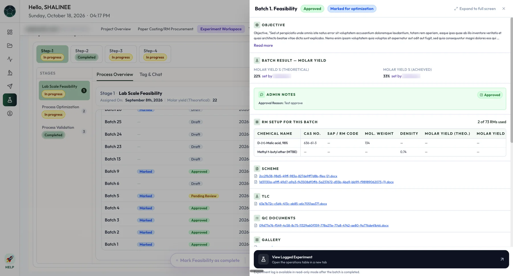
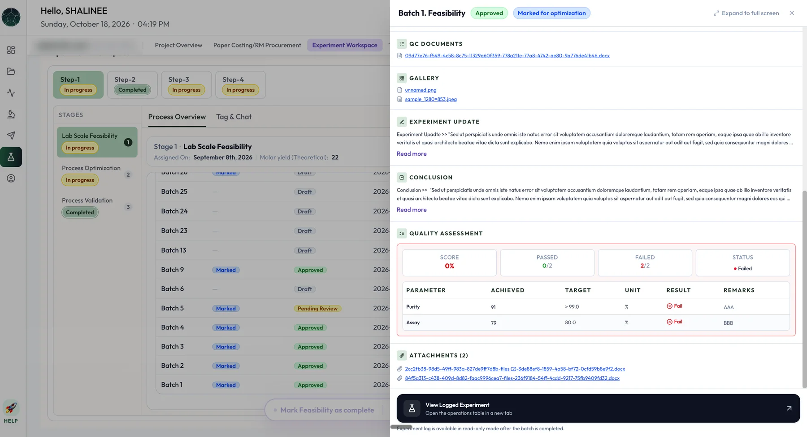
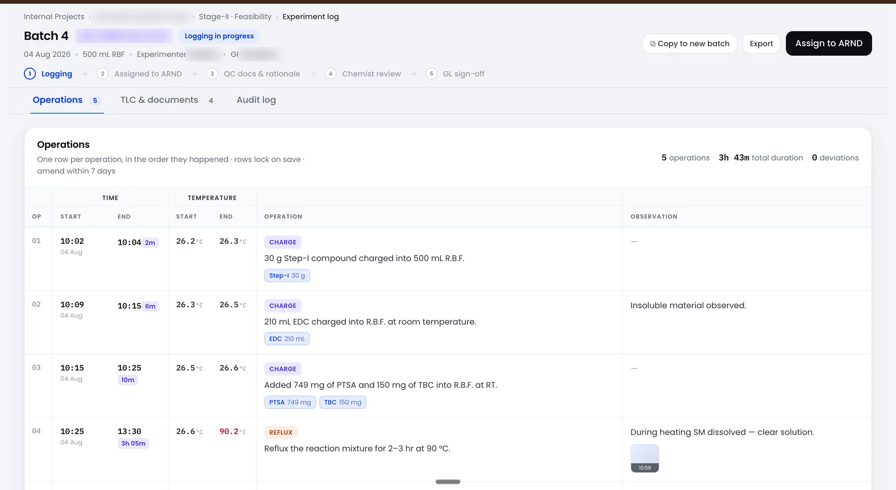

The R&D module in Nucleus: every R&D request from customers, and the internal team’s workflow from route selection to scale-up, QC and regulatory, through execution, costing and tracking.
Role
Product Manager
Scope
R&D workflow, execution, costing and visibility
For
Leadership, project managers, group leaders, chemists, analytical and finance teams
Covers
Request to project closure
My scope
I owned the R&D workflow, from the first request to the last experiment.
R&D requests arrive from customers through Scinode Customers → and from within the business. In Nucleus, the internal team plans the work, runs it, and tracks it end to end, with the cost visible at every stage. I wrote the PRDs and designed the flows for each layer, from leadership view to lab bench.
Impact
One workflow cut cycle time by about 75% and spreadsheets by 93%.
78%
Adoption
80
Scientists across three labs
−75%
Cycle time, from a month to a week
−93%
Fewer spreadsheets
With the entire R&D workflow in one place, from route selection to tracking, the business team’s cycle time dropped from a month to a week. That faster cycle translated into revenue growth. Work that used to live in spreadsheets now lives in one place, and spreadsheets fell by 93%.
The problem
R&D progress and cost lived in separate places.
When a project was assigned to internal R&D, there was no joined-up way to capture progress, keep data consistent between leadership and the project team, or record who decided what. Costing sat in separate sheets, entered by hand and not organised by stage, so comparing budget with actual was slow.
Data silos
Progress, documents and costing sat in different tools, with no single record.
Manual tracking
Coordination ran on emails and sheets, and versions drifted.
Limited visibility
Leadership could not see progress or cost without asking for an update.
Goals
Connect leadership, project control and the lab.
What I set out to do
A two-way link between the leadership view and project execution.
Less manual coordination and document handling.
Real-time visibility of progress, cost and milestones for leadership.
What I kept out of scope
Redesigning Nucleus.
Pricing and cost-optimisation models, left for a later phase.
An electronic lab notebook in this first release. It followed as its own module in Scinode for Researchers.
Who it is for
Six groups, one project record.
Each group sees the same project, scoped to what they need to decide or do.
CXO, business unit and R&D heads
Leadership
One view of every R&D project: its stage, cost and progress, without chasing updates.
Portfolio viewInternal vs CRO loadRequest sourceSuccess rateTurnaround time
Read-only, in Nucleus.
Super Admin and project managers
R&D project management
Take in each request, choose the route, set the budget, assign the work and approve every milestone.
Scope and routingPaper costingAssign and approveComments and history
Super Admin creates, edits, assigns and approves. Project managers edit, assign and comment.
R&D scientists’ head
Group leaders
Own execution: coordinate chemists and analysts, run batches and move each stage forward.
Batches and runsAssign analystsSuccessful, golden, validatedTech pack
Update status, upload data and assign work downstream.
Internal R&D scientists
Chemists
Log experiments and results against the right batch, in one place.
Experiment dataUploadsChat with the project manager
Assigned internal projects only, with limited input. No vendor access, CRO projects or budget approvals.
Test and reporting
Analytical team
Report test results on the batch they were asked to analyse.
Test resultsHPLC, GC and NMR reportsCommentsAnalytical cost
Assigned batch by batch by the group leader.
Costing and actuals
Finance team
One structured place for actual cost, compared against the budget.
Costing sheet linkCost componentsBudget vs actual flag
A new Admin – Finance role edits. Project managers, Super Admin and leadership view.
How it fits together
Three layers, each with its own job.
Nucleus takes the request in and gives leadership the portfolio view. Scinode Admin is where the project is scoped, costed, approved and tracked. The lab workspace is where the experiments run. It is the same execution workspace external CROs use, with internal workflows for the internal team.
Nucleus
Intake, routing and portfolio
Captures every request, routes it to internal R&D or an external CRO, and keeps the portfolio view.
LeadershipBusiness unitsCRM
↔
Scinode Admin
Project control
Where scope, costing, assignment, approval and tracking happen.
Super AdminProject managersFinance
↔
Lab workspace
Execution
Where batches and runs are executed and data is uploaded.
Group leadersChemistsAnalyticalProcurement
Costing and stage status sync back to Nucleus as they change. At closure, Nucleus receives status and stages, not the raw data. Internal project managers see internal projects only, and see the external workflow only if a project later moves to a CRO.
The end-to-end flow
From a request to a closed project.
The route decision comes first. A project can go internal after paper costing, or go to a CRO early when one is already a clear fit. Once the experiment starts, each stage follows the same pattern.
Paper costing
One costing, five hand-offs.
The budget is built across five roles. Each hand-off is an assignment with a notification, so work does not wait in an inbox. Once approved, the costing is replicated in Nucleus for leadership.
The approval loop
One loop at every milestone.
A successful batch, a golden batch, a completed validation and a submitted tech pack all follow the same loop. Users learn it once.
Budget against actual
Cost is compared as the work runs.
Paper costing sets the budget. A finance costing tab holds the actuals, with the same components, and the system flags the difference: green when the project is under budget, red on an overrun. The flag also shows as a tag on the project itself.
Budget
Paper costing
Built before any experiment runs, then approved.
Raw materialJob workFTEAnalyticalCAPEXMiscellaneous
↔
Cost flag
Difference
Actual against budget, updated as costs are saved.
Green: under budgetRed: overrun
↔
Actual
Finance costing tab
Entered by the finance team, with a link to the costing sheet.
Same componentsTotal calculatedSaved per field
Screens
Inside the product.

Internal Projects: every project with its owner, costing and dates in one list. Names, codes and owners are blurred.

Project overview: progress for each lifecycle step and overall completion.

Paper costing: the budgeted and actual columns side by side, with the closure statement from Admin. Links are blurred.

The totals and the green within-budget flag, with stages created automatically from the costing sheet.

Experiment workspace: steps and stages on the left, the stage record and its batches on the right.

Batches in list view: status, marked-for-optimisation, theoretical and achieved yield for every batch.

One batch in detail: objective, yield, the admin’s approval note, raw materials, scheme and QC documents.

The same batch’s analytical result: parameters against target, with a pass or fail result and the attachments.
Experiment logging
The ELN followed as its own module.
The electronic lab notebook plugs into Scinode for Researchers as another module, built on the batch and stage structure above. It logs each experiment operation by operation under its batch, rather than as a free-form notebook. It is built for internal scientists first, and stays scalable to CROs. See how it works after the PO →
Logging→Assigned to ARND→QC docs and rationale→Chemist review→Group leader sign-off

The experiment log for one batch. One row per operation, in the order it happened, with start and end time, temperature, the material charged and what was observed. Names and codes are blurred.
→One row per operation. Each records when it started and ended, the temperature, what was charged, and what was seen, with photos. The batch shows its operations, total duration and deviations at a glance.
→Rows lock on save. A row can be amended within seven days, and every change is kept in an audit log.
→Built to repeat. A finished log can be copied into a new batch or exported.
→Admin configures the logging parameters per project type, so each kind of project captures what it needs.
→Moving between stages and designating a golden batch need both the group leader and the R&D head, a role created for this.
→Template-based experiment execution is planned for a later version.
Product decisions
Six decisions that shaped it.
→One execution engine, two modes. Internal scientists and external CROs work in the same workspace with different roles and permissions, so a project can move between them without being re-keyed.
→The same loop at every milestone. Every progression triggers a notification, a review screen and an approve or reject, with remarks mandatory on rejection.
→Unlock in order, work in parallel. Feasibility, optimisation and validation unlock one after another, but work across stages can overlap, so labs are not left waiting on approvals.
→Route to a CRO before costing when it is clear. Paper costing is not always the deciding factor. A Super Admin can send a project to a suitable CRO without waiting for it.
→Every batch carries its source. Numbering continues across stages and shows the batch it came from, so a feasibility batch that becomes an optimisation batch keeps its lineage.
→Budget and actual share one flag. Green or red, on the costing tab and on the project, so a cost overrun is seen without opening a sheet.
Use cases
What each person can do.
→As a member of leadership, I can assign a project to internal R&D from Nucleus, so it appears in project management without a hand-off.
→As a Super Admin, I can see incoming projects, define scope and costing, choose internal or external, and sync the result to Nucleus.
→As a project manager, I can assign work to group leaders and validate what comes back.
→As a group leader, I can run batches, assign analysts, and mark a batch successful or try a new one.
→As a chemist, I can log experiment data and upload documents against my assigned batch.
→As an analytical team member, I can add test results and upload HPLC, GC or NMR reports to a batch.
→As a finance team member, I can attach the costing sheet, enter actual costs and see the budget flagged green or red.
→As an admin, I can approve or reject any milestone with remarks, and comment in the project without leaving it.
→As a leader, I can see every project’s stage, cost and status in one place, in near real time.
How I defined success
Targets set before build.
These are the targets in the PRD, set before the work started. The results are in Impact above.
Data sync between leadership view and project control100%, no manual step
Reduction in manual coordination60% or more
Leadership visibility of project statusReal time, under 1 hour
Time to assign or approve in the costing stageUnder 48 hours
Active projects using comments and rationale80% or more
What I owned
→The R&D workflow, from request intake and routing through paper costing, feasibility, optimisation, validation, tech pack, pilot scale and closure.
→The PRDs and flows for the leadership, project control and lab layers, including roles and permissions.
→The approval loop used at every milestone.
→Costing, from the five-role hand-off chain to the finance costing tab and the budget-against-actual flag.
→What syncs back to Nucleus at each stage, so leadership sees status without raw data.
→The ELN module: experiment logging under each batch, with analytical testing and approval gates.